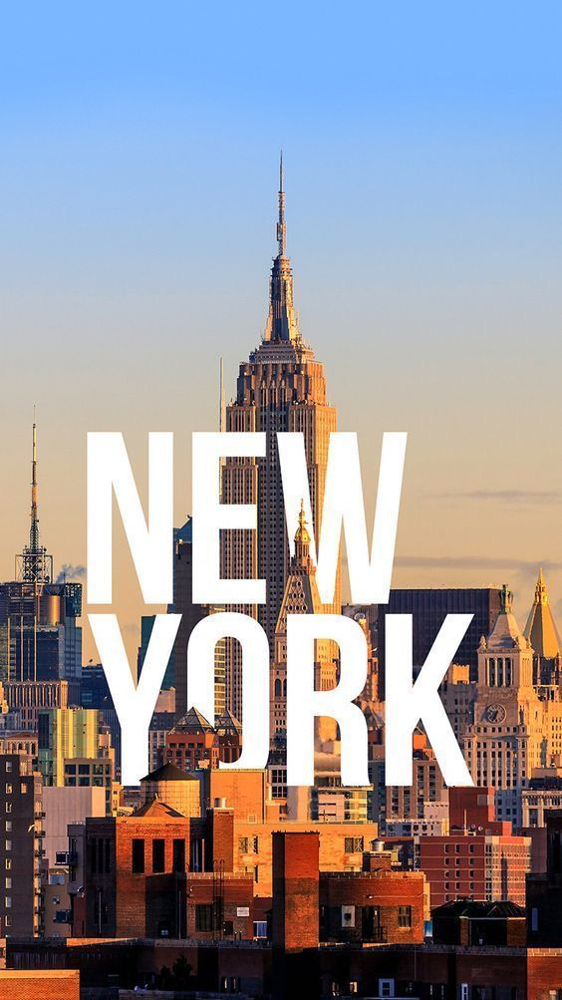
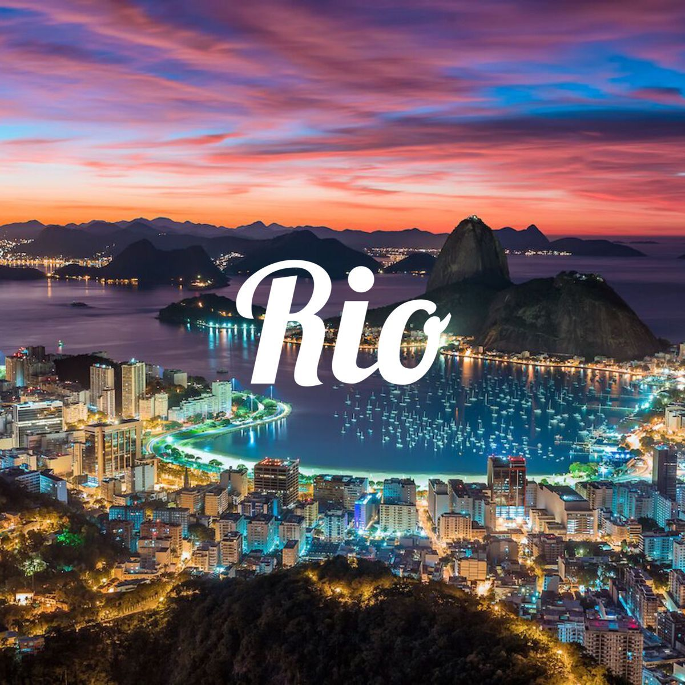
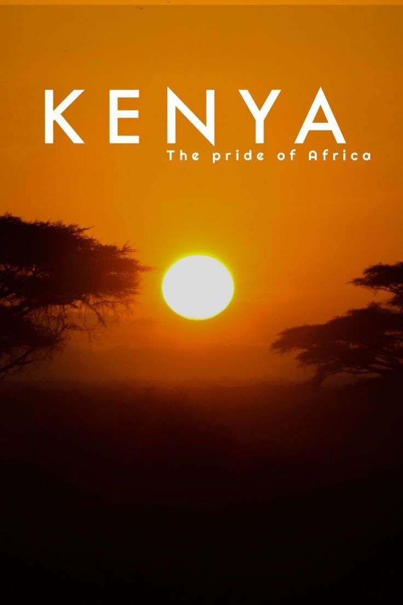
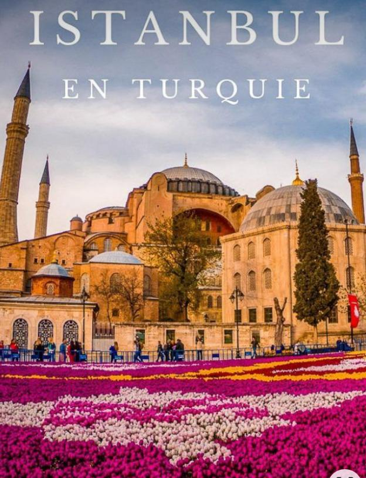
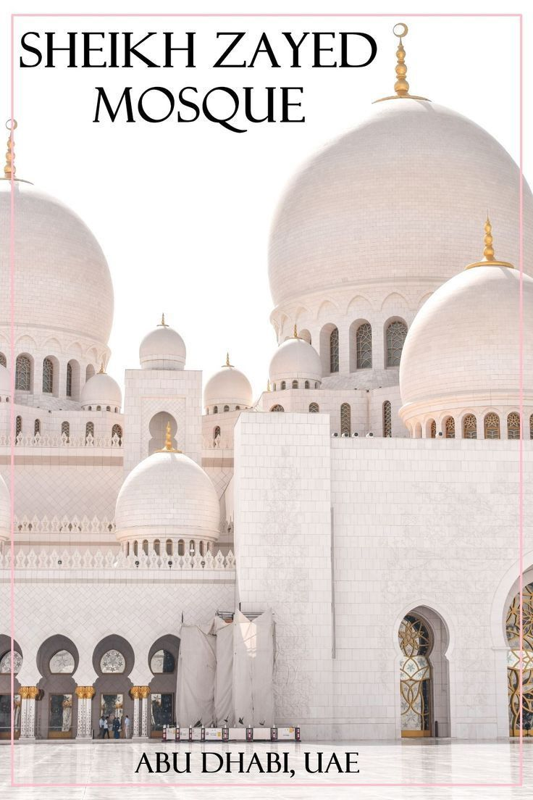

GUIDE

Que devez-vous savoir sur NEW-YORK?
New York est une ville composée de 5 arrondissements à l'embouchure du fleuve Hudson et de l'océan Atlantique. En son centre se trouve Manhattan, un arrondissement densément peuplé faisant partie des principaux centres commerciaux, financiers et culturels du monde. Ses sites incontournables comprennent des gratte-ciel comme l'Empire State Building et l'immense Central Park
Superficie : New York City s'étend sur une superficie d'environ 783,8 km²
- Langue : La langue principalement parlée à New York est l'anglais
- Habitants : La population de New York City est d'environ 8,4 millions de personnes
- Monnaie : La monnaie utilisée à New York est le dollar américain (USD)
- Densité : 10 715 habitants par kilomètre carré
- Indicatif téléphonique : +1, suivi du code régional 212, 646, 917 ou 332

Que devez-vous savoir sur RIO DE JANEIRO?
Rio de Janeiro est une grande ville du Sud-Est du Brésil, et la capitale de l’État du même nom. La ville comprend 6,1 millions d'habitants appelés les Cariocas. L'agglomération rassemble 11,35 millions d'habitants. Elle est mondialement connue pour son carnaval, ses plages ainsi que sa statue du Christ Rédempteur. La ville se situe à 9 144 km au sud-ouest de Paris et à 361 km à l'est de Sao Paulo.
- Superficie : Rio de Janeiro s'étend sur une superficie d'environ 1 221 km²
- Langue : La langue principalement parlée à Rio de Janeiro est le portugais
- Habitants : La population de Rio de Janeiro est d'environ 6,7 millions de personnes
- Monnaie : La monnaie utilisée à Rio de Janeiro est le réal brésilien (BRL)
- Densité : de 5 480 habitants par kilomètre carré
- Indicatif téléphonique : +55, suivi du code régional 21

Que devez-vous savoir sur KENYA?
Le Kenya est connu pour sa diversité culturelle, sa faune incroyable et ses paysages à couper le souffle. Par exemple, le parc national du Masai Mara est célèbre pour ses safaris et sa migration annuelle des gnous.
Superficie : Le Kenya s'étend sur une superficie d'environ 580 367 km²
- Langue : La langue principale parlée au Kenya est le swahili, mais l'anglais est également largement utilisé
- Habitants : La population du Kenya est d'environ 53 millions
- Monnaie : La monnaie utilisée au Kenya est le shilling kényan (KES)
- Densité : de 91 habitants par kilomètre carré
- Indicatif téléphonique : +254

Que devez-vous savoir sur ISTANBUL?
la plus grande ville et métropole de Turquie et la préfecture de la province homonyme, dont elle représente environ 50 % de la superficie mais plus de 97 % de la population. Quatre zones historiques de la ville sont inscrites sur la liste du patrimoine mondial de l'Unesco depuis 1985. Istanbul est le principal centre économique (pôle financier, commercial et industriel) de la Turquie[2] mais aussi la vitrine culturelle du pays, la capitale de la Turquie étant Ankara.
Superficie : Istanbul s'étend sur une superficie d'environ 5 343 km²
- Population : La population d'Istanbul est d'environ 15 millions de personnes, ce qui en fait l'une des plus grandes villes du monde
- Langue : La langue principale parlée à Istanbul est le turc, mais l'anglais est également largement utilisé dans les zones touristiques
- Monnaie : La monnaie utilisée à Istanbul est la livre turque (TRY)
- Fuseau horaire : Istanbul est située dans le fuseau horaire UTC+3

Que devez-vous savoir sur ABU DHABI?
La Mosquée Cheikh Zayed à Abu Dhabi est une mosquée incroyablement belle et impressionnante. Elle est l'une des plus grandes mosquées au monde et peut accueillir jusqu'à 40 000 fidèles. Sa structure est magnifique, avec des minarets blancs et un dôme principal en marbre. À l'intérieur, on trouve de superbes tapis persans, des lustres en cristal et des mosaïques détaillées. La mosquée est ouverte aux visiteurs de toutes les religions et propose des visites guidées pour admirer sa beauté et en apprendre davantage sur la culture islamique. C'est vraiment un endroit à voir si tu te trouves à Abu Dhabi
- Taille : La Mosquée Cheikh Zayed est l'une des plus grandes mosquées au monde, pouvant accueillir jusqu'à 40 000 fidèles
- Architecture : Elle est connue pour son architecture impressionnante avec ses minarets blancs et son dôme principal en marbre. Elle mélange des styles architecturaux islamiques traditionnels et des éléments modernes
- Décoration : L'intérieur de la mosquée est tout aussi impressionnant, avec des tapis persans faits à la main, des lustres en cristal et des mosaïques détaillées